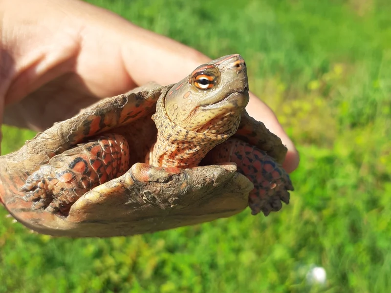

アカスジヤマガメという種名のもとになった基亜種。メキシコ南西部のゲレーロ州〜オアハカ州の太平洋斜面に分布する。CITES II掲載・高湿度管理が必要な中上級種。

1年後の甲長は12〜16cm程度。高湿度の落ち葉床を好み、隠れ家でじっとしている時間が多い。慣れてくると採食時に活動し始める様子が観察できる。草食傾向が強く、葉・果実が主食になる。
10年後は甲長17〜20cm程度が多い。同種の他亜種と大きさはほぼ変わらない。90cm級ケージへの移行を見込んだ計画が必要で、20〜50年の寿命を持つ長期飼育種になる。
アカスジヤマガメの流通で最も鮮やかとされるのは南ニカラグア産のマンヤマガメで、種名のもとになった基亜種がいちばん華やかとは限らない。基亜種はメキシコ南西部の産で、模様の出方は個体差が大きい。鮮やかさを期待して迎えると印象が食い違うことがある。亜種名と産地を先に確認しておきたい。
メキシコ南西部、ゲレーロ州からオアハカ州にかけての太平洋斜面の低地林・川辺に分布する。iNaturalist の Research Grade 観察はおおむね北緯15.7〜18.9度・西経101.7〜96.0度に集中しており、アカスジヤマガメ4亜種のなかでは南メキシコの太平洋岸を占める亜種にあたる。
テラリウムに浅い水場を設置し、陸場を広めに取る構成が理想的です。霧吹きまたはミスティングシステムで湿度を管理してください。飼い方はアカスジヤマガメの他の亜種と変わりません。
← 横にスクロールできます
| 種名 | 甲長 | 難易度 | 必要環境 | 特徴 |
|---|---|---|---|---|
| ゲレーロクジャクガメ このページ | 17〜20cm | 中〜上級 | 60cm〜 | 本亜種 |
| アカスジヤマガメ（種全体） | 17〜20cm | 中〜上級 | 60cm〜 | 本亜種の親種 |
| ニカラグアクジャクガメ | 18〜20cm | 中〜上級 | 60cm〜 | 中米北部の亜種 |
| マンヤマガメ | 18〜20cm | 中〜上級 | 60cm〜 | 最も鮮やかな亜種 |
ゲレーロクジャクガメはアカスジヤマガメの基亜種で、飼い方も同じ林床型（高湿度・半陸棲・冬は加温）です。2023年2月発効でアメリカヤマガメ属（Rhinoclemmys）は属一括で附属書IIに掲載されています。基亜種であっても飼育上の扱いは他の亜種と変わりません。
アカスジヤマガメの亜種は色と模様が連続的に変化し、写真だけで亜種を確定することはできません。基亜種の分布についても資料によって記述に幅があります。産地の分からない個体を亜種名で断定することは、このサイトでは行いません。本ページの写真は iNaturalist の Research Grade・rank=subspecies 同定に依拠しており、標本による検証ではありません。
本ページの和名「ゲレーロクジャクガメ」は、既存の亜種ページ（ニカラグアクジャクガメ）と同じく産地にもとづく当サイトの表記です。国内で定着した和名があるわけではありません。
飼育温度・湿度などの数値は飼育資料と国内飼育の一般的な目安にもとづきます。確定的な一次資料が乏しい項目は断定していません。